✧ SEDIKIT CERITA TENTANG KISAH KITA ✧
A JOURNEY CALLED LOVE
♡
Setiap halaman punya cerita, tetapi ada beberapa yang ingin dibaca berulang kali.
Siap menjelajahi buku kita?
Sebuah cerita kecil untuk dikenang.
✧ SEDIKIT CERITA TENTANG KISAH KITA ✧
Setiap halaman punya cerita, tetapi ada beberapa yang ingin dibaca berulang kali.
Siap menjelajahi buku kita?
Sebuah cerita kecil untuk dikenang.
BAB 02 · AWAL CERITA
Setiap cerita indah pasti punya permulaan. Dan entah bagaimana, di antara banyaknya orang di dunia ini, jalan kita akhirnya bertemu. Mungkin hanya kebetulan. Mungkin juga sebuah takdir kecil. Namun, satu hal yang pasti: mengenal "kita" menjadi salah satu bagian yang menyenangkan dalam perjalanan hidup.
BAB 03 · HAL-HAL KECIL
Terkadang, kebahagiaan bukan tentang hal-hal yang besar dan luar biasa. Itu bisa hadir melalui percakapan ringan, tawa tanpa alasan, candaan sederhana, dan momen yang rasanya ingin diulang lagi.
KENANGAN PERTAMA · SENYUMAN KECIL
Empat ruang untuk menyimpan senyuman dan momen-momen kecil yang membuat hari terasa lebih baik.
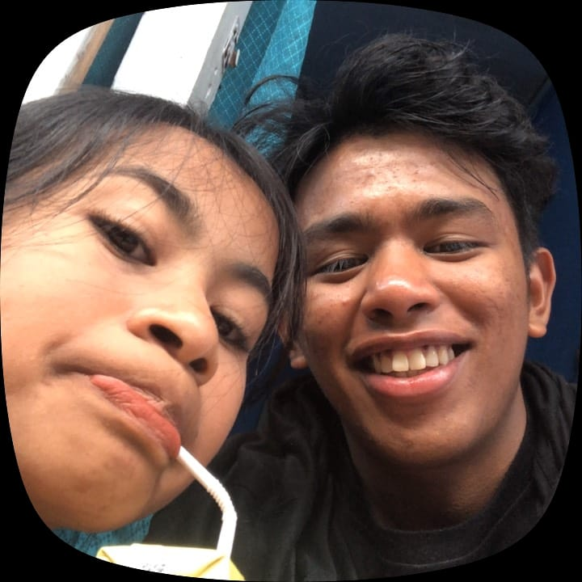
Foto 1
images/senyuman-1.jpg
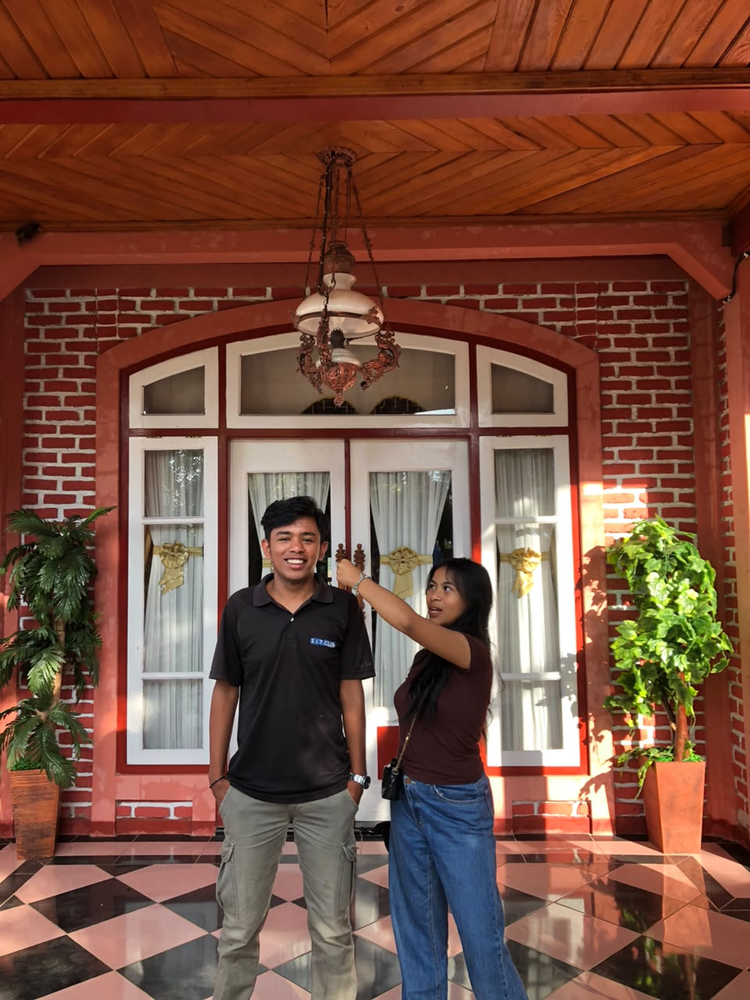
Foto 2
images/senyuman-2.jpg
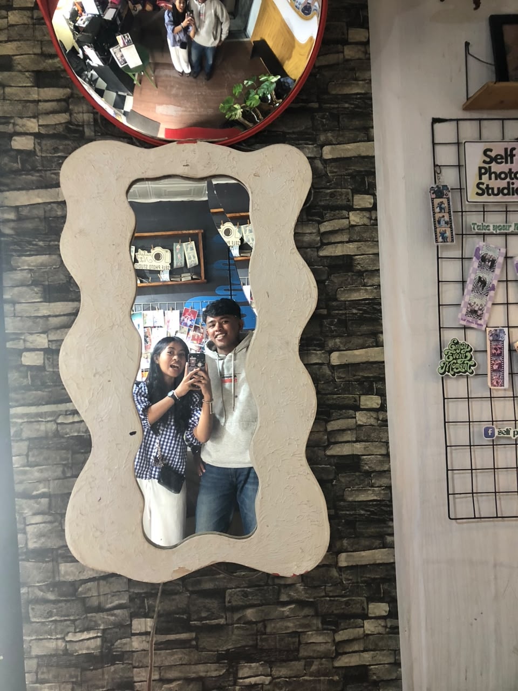
Foto 3
images/senyuman-3.jpg
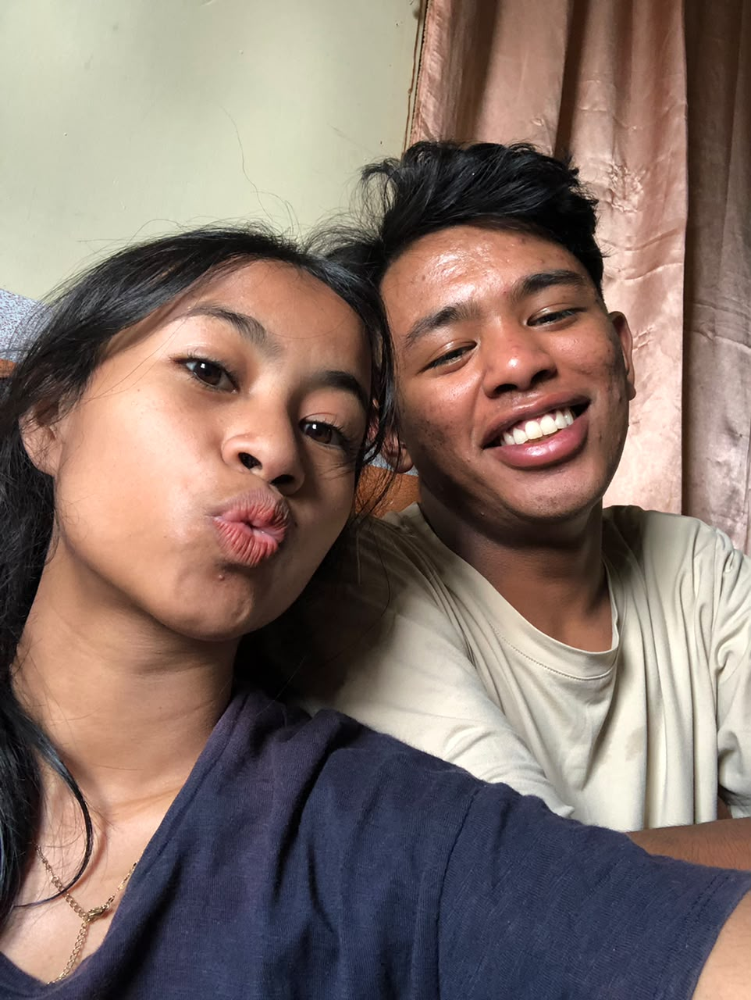
Foto 4
images/senyuman-4.jpg
Setiap foto menyimpan cerita kecil yang punya tempat tersendiri.
KENANGAN KEDUA · PERCAKAPAN
Tiga ruang untuk mengabadikan cerita, obrolan, dan percakapan sederhana yang ingin dikenang.
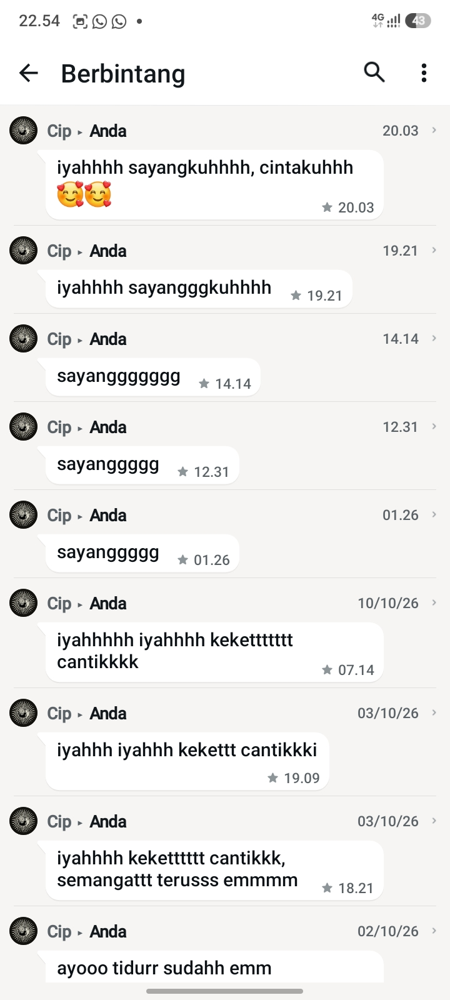
Foto 1
images/percakapan-1.jpg
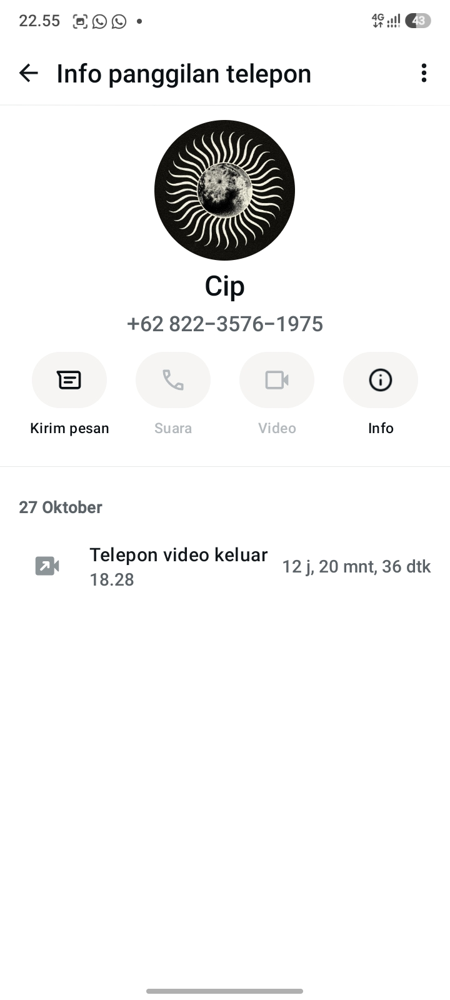
Foto 2
images/percakapan-2.jpg
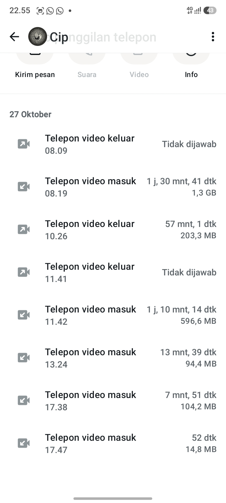
Foto 3
images/percakapan-3.jpg
Setiap foto menyimpan cerita kecil yang punya tempat tersendiri.
KENANGAN KETIGA · HAL SPESIAL
Tiga ruang untuk menyimpan momen yang terasa istimewa dan punya arti tersendiri.
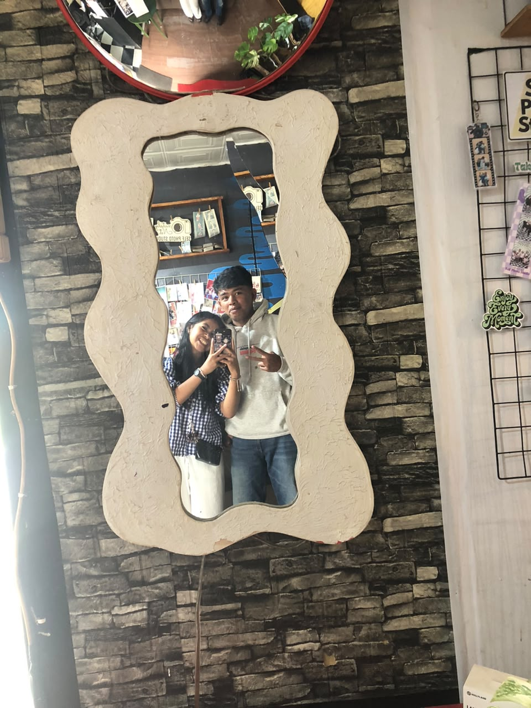
Foto 1
images/spesial-1.jpg
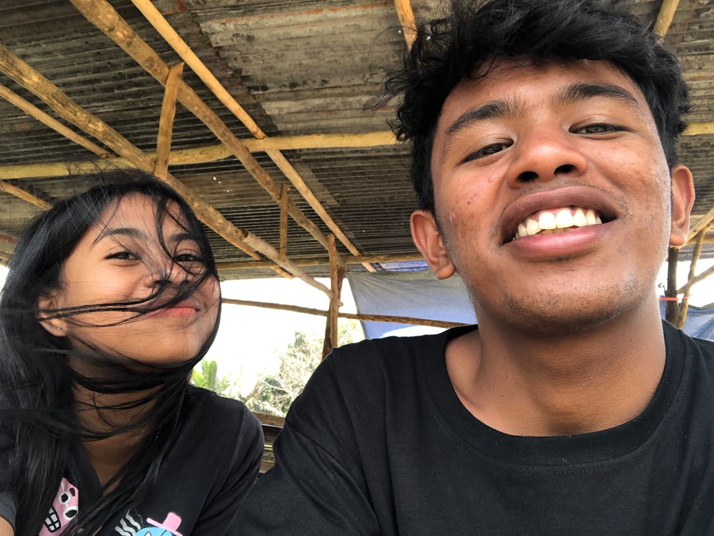
Foto 2
images/spesial-2.jpg
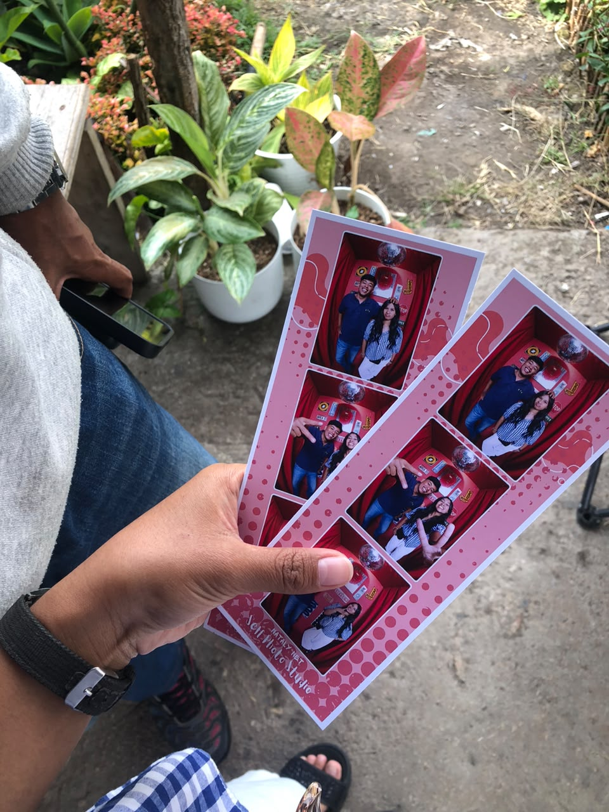
Foto 3
images/spesial-3.jpg
Setiap foto menyimpan cerita kecil yang punya tempat tersendiri.
BAB 04 · HARI ESOK
Saya tidak tahu persis seperti apa hari-hari yang akan datang. Mungkin ada tempat baru, cerita baru, kejutan tak terduga, dan banyak hal yang belum kita ketahui. Namun, saya berharap kita selalu temukan alasan untuk tersenyum dalam setiap perjalanan yang kita lalui. Sebab setiap hari selalu punya kemungkinan untuk menjadi lebih baik.
BAB TERAKHIR
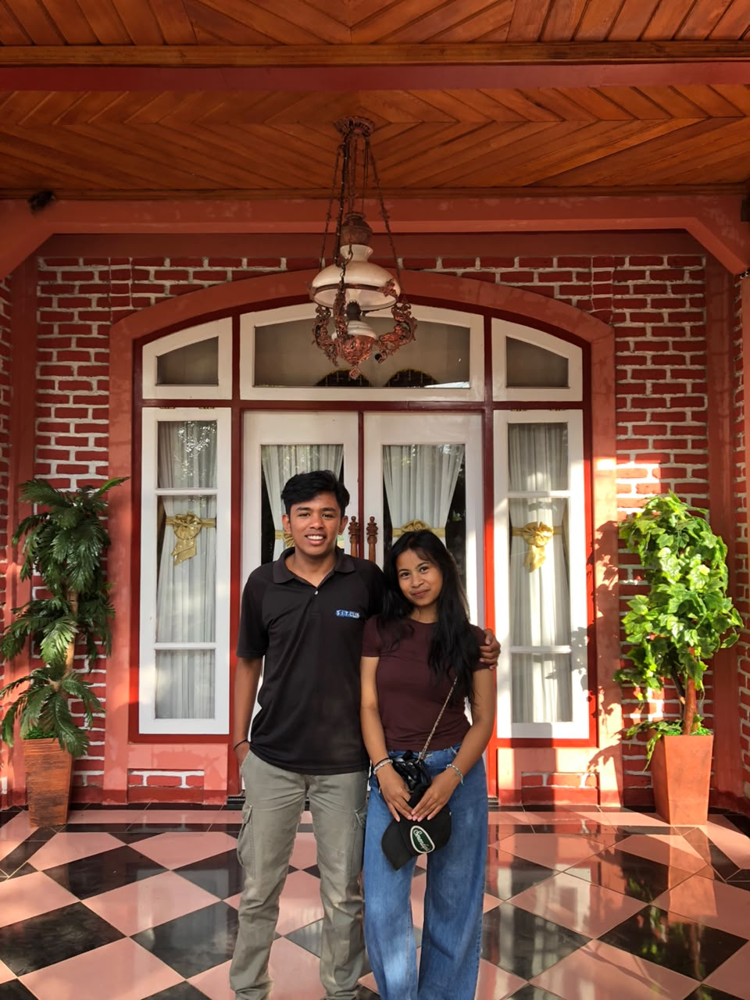
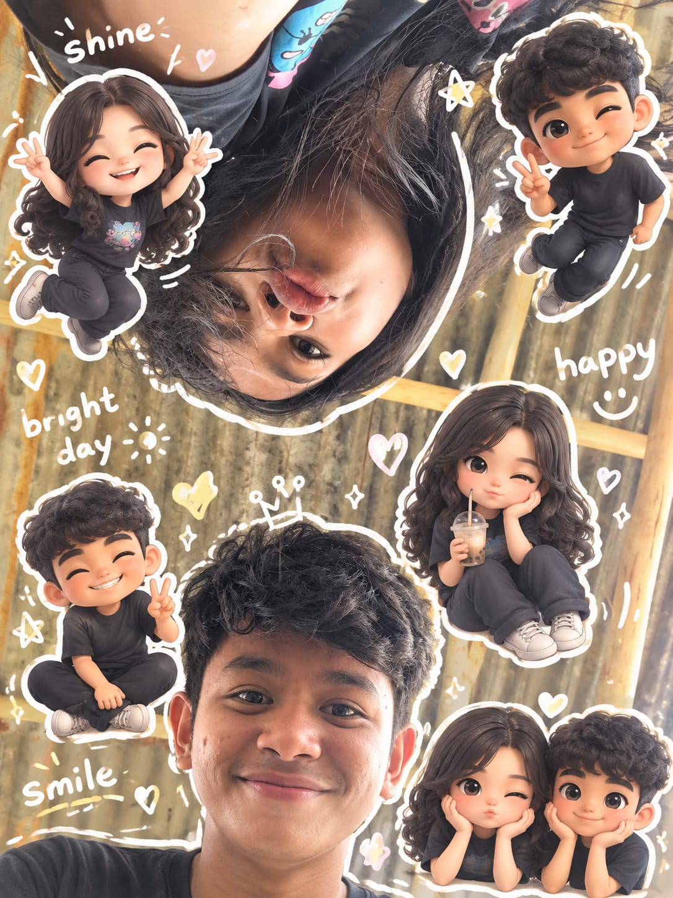
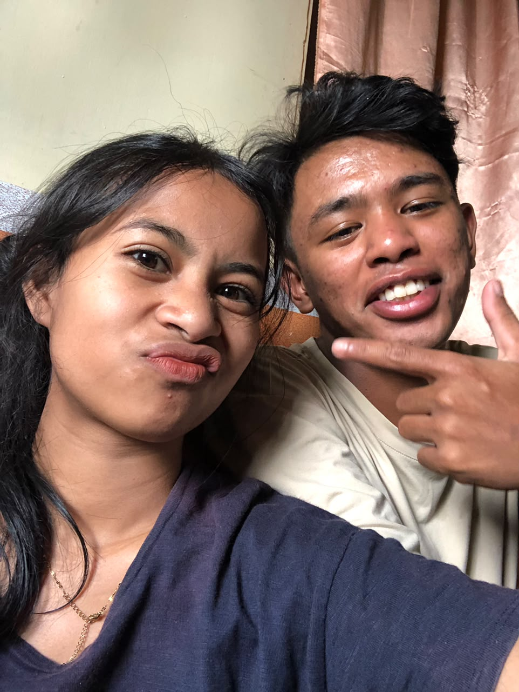
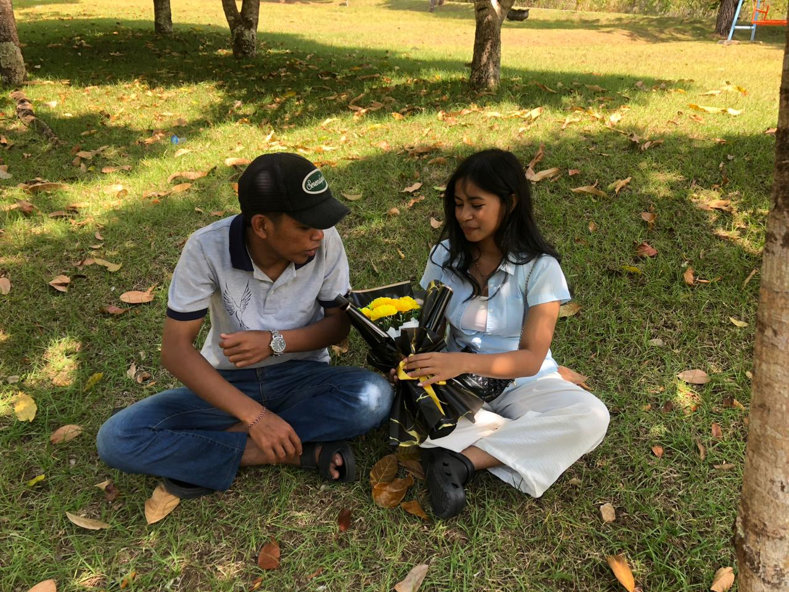